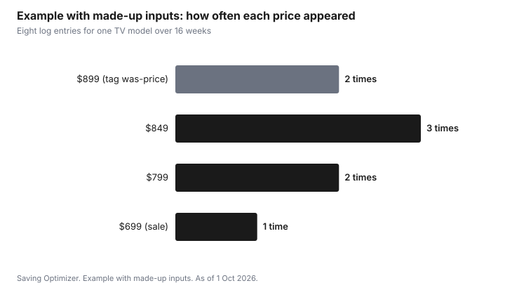

Technology · Canada
Tracking Electronics Prices in Canada Beyond Amazon: Alerts, Flyers and Real 'Was' Prices
Tracking electronics prices in Canada works best when you follow one exact model number across several stores, keep a dated log of what you see, and judge any was-price against the Competition Bureau's tests rather than the tag. Amazon price-history tools cover one store. Best Buy, Costco, Walmart, Staples, The Source, Canadian Tire and manufacturer sites each set their own prices and run their own sales, and a flyer week can beat a marketplace low.
Key takeaways
- Track the exact model number, not the product name. Retailers can sell close variants under different numbers.
- Use alerts and price-history tools as offer types, plus flyers, and write every price you see in a dated log.
- The Competition Bureau's guidelines describe a volume test (more than 50 percent of sales at or above the reference price, generally over 12 months) and a time test (offered at or above it more than 50 percent of the time, generally over 6 months).
- A price adjustment window can turn a later drop into a refund. Windows and exclusions differ by store.
- Example with made-up inputs: a log of eight prices shows the $899 was-price appeared only twice.
Track one model number, not a product name
Two TVs with the same name and screen size can carry different model numbers, different panels, and different prices. Retailers sometimes sell a variant only they carry, which makes a direct comparison hard. Copy the full model number from the spec sheet, then search that string at each store. If a store has a slightly different number, compare the spec sheets line by line before treating the prices as comparable. The TV specs guide and the laptop specs guide list the lines that matter.
Alerts, price-history tools and flyers
There are three offer types for watching prices, and none of them covers every store.
- Store alerts and wish lists: many retailer sites let you save an item and get an email when it changes. They cover only that store.
- Price-history sites and browser extensions: they chart past prices for the stores they track, which is often one marketplace. Check which stores a tool covers before you trust its low.
- Flyers and flyer apps: weekly flyers show advertised prices across stores in one place. They are good for spotting a sale and poor for history, so log what you see.
Combine them. An alert tells you something changed; a flyer shows who else is running a sale this week; your log tells you whether the number is actually low.
Keep a dated price log
A price log is a short spreadsheet or note with four columns: date, store, model number, price. Add a fifth for anything that changes the comparison, such as an included accessory or an open-box condition. Every time you see the item, add a line.
After a few weeks the log answers the question a tag cannot: how often was this item really at the was-price? It also gives you the evidence a price adjustment or price match asks for, since stores generally want to see the competitor's current price for the identical item.
| Column | What to write | Why |
|---|---|---|
| Date | The day you saw the price | Shows how long a price lasted |
| Store | Retailer and whether it is sold by the store or a marketplace seller | Marketplace items are often excluded from price matches |
| Model number | The full string from the spec sheet | Prevents comparing variants |
| Price | Shelf or checkout price before tax | The number every test is about |
Is the was-price real? The Competition Bureau's tests
In Canada, an ordinary price claim such as "was $899, now $699" is covered by the Competition Act. The Competition Bureau's enforcement guidelines on ordinary price claims, dated 16 October 2009, describe two tests. The volume test asks whether a substantial volume of the product, more than 50 percent of sales, was sold at or above the reference price, generally within 12 months. The time test asks whether the product was offered in good faith at or above that price for a substantial period, more than 50 percent of the time, generally within 6 months. The Bureau's page notes it is reviewing its guidelines after amendments to the Act.
You cannot see a store's sales volume, but your log can show how often the item was offered at the was-price. If the was-price appears for a week before every sale, treat the discount as smaller than the tag says. If you think a claim is misleading, the Competition Bureau accepts complaints online. The clothing was-price guide applies the same tests to a different aisle.
Use price adjustment windows after you buy
If the price drops after you buy, a price adjustment can refund the difference. Windows and exclusions differ. As of 1 Oct 2026, Costco adjusts to its own lower price within 30 days, Staples gives 14 days for electronics, Canadian Tire uses 30 days, and Best Buy's Low Price Guarantee excludes Black Friday, Cyber Monday and Boxing Day prices. Keep watching your log for the length of the window after you buy. The price adjustment guide and the retailer policy comparison have the terms.
Example with made-up inputs: eight log entries
These numbers are an example with made-up inputs, not store prices. A buyer logs one TV model eight times over sixteen weeks across three stores. The tag says "was $899". The log shows $899 twice, $849 three times, $799 twice and $699 once. The $899 was-price appeared in a quarter of the entries. Against the typical $849, the $699 sale saves $150, not the $200 the tag implies.
| Price seen | Times in the log |
|---|---|
| $899 | 2 |
| $849 | 3 |
| $799 | 2 |
| $699 | 1 |

Sources
- Competition Bureau, Ordinary Price Claims enforcement guidelines, 16 October 2009, as of 1 Oct 2026. Volume test more than 50 percent, generally 12 months; time test more than 50 percent of the time, generally 6 months; the Bureau is reviewing its guidelines.
- Costco.ca price adjustment answer, as of 1 Oct 2026. Adjusts to its own lower price within 30 days; no competitor match.
- Staples Canada price match policy, as of 1 Oct 2026. 14 days for electronics.
- Canadian Tire price match policy, as of 1 Oct 2026. 30 days.
- Best Buy Canada, Low Price Guarantee, as of 1 Oct 2026. Black Friday, Cyber Monday, Boxing Day, marketplace and clearance excluded.
- Every price and count in the example table and chart is an example with made-up inputs.
Frequently asked questions
How do I track electronics prices in Canada outside Amazon?
Follow the exact model number at each store, use store alerts and flyers, and keep a dated log of date, store, model number and price. Price-history tools often cover one marketplace, so check which stores a tool tracks.
How can I tell if a was-price is real in Canada?
The Competition Bureau's guidelines describe a volume test, more than 50 percent of sales at or above the reference price generally within 12 months, and a time test, offered at or above it more than 50 percent of the time generally within 6 months. Your own log shows how often the item was actually at the was-price.
Why do the same TVs have different model numbers at different stores?
Retailers sometimes carry variants with their own model numbers, which can differ in panel, ports or included items. Compare spec sheets line by line before treating two prices as the same item.
What should a price log include?
Date, store, full model number, and price before tax. Add a note for anything that changes the comparison, such as an included accessory, open-box condition, or a marketplace seller.
Can I get money back if the price drops after I buy?
Often, within the store's price adjustment window. As of 1 Oct 2026, Costco uses 30 days for its own price, Staples 14 days for electronics, and Canadian Tire 30 days; Best Buy excludes Black Friday, Cyber Monday and Boxing Day from its guarantee.
Researched and drafted with AI assistance and fact-checked against official Canadian sources. How we create content.
Disclosure: Price-tracking tools, alerts and flyer apps are described as offer types. Saving Optimizer may earn a commission if a partner link is added later. No partnership is claimed, and no tool or retailer is ranked. Education only. This is not legal advice.